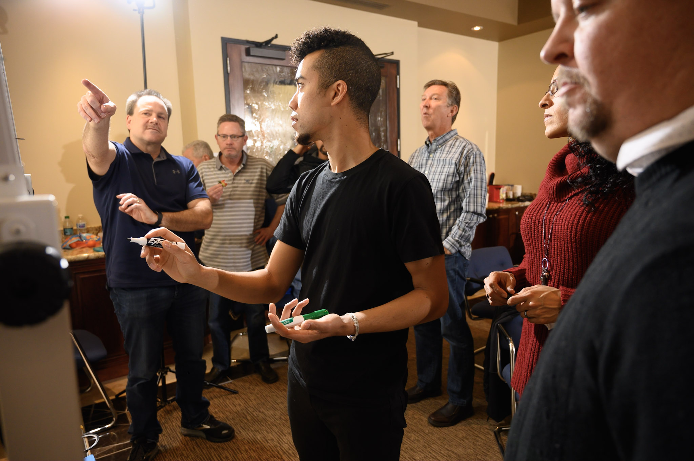

Helping a construction tools company innovate into the digital age
with Calculated Industries.

Workshop planning and customization
Sprint facilitation and coachingWireframing
Recruiting
Usability lab setup and testing design
Usability lab moderation
Synthesis and documentation
Overview
Organized and facilitated a weeklong, Google-Ventures-style design sprint for a mid-size construction tools company who wanted to innovate into the digital products space. Over the course of five days, I coached 9 of their senior staff members (including their CEO, CFO, and chief engineers) through their first design sprint and first exposure to design thinking methods, including ideation, prototyping, testing. At the end of the week, they decided to move forward with our prototype app; in the months following, they hired a full-time innovation manager to oversee the development of the concept we had tested.
CONTEXT
Calculated Industries is a mid-sized company producing specialized tools for technical industries, including construction and accounting - physical products trusted in the industry for decades in their niche applications. An older, engineering-led organization, their development processes and internal team culture were more waterfall than agile. Calculated’s executive team had recently begun investing in innovation trainings and workshops with mixed results. Prior to our engagement, the team had floated various ideas for new digital tools to modernize their product offerings, but they wanted to be sure that new innovation R&D would be worth the investment, and were eager to learn and internalize innovation methods.
CHALLENGE
The objectives for this workshop were thus twofold: 1) select and advance one of their product ideas, giving them the confidence to develop or iterate it further, and 2) introduce their executive team to design thinking methods, encouraging a human-centric innovation culture in their organization.
Planning
After upfront interviews with their executive team to understand their current innovation culture as well as their goals and expectations, I coordinated and customized the sprint, drawing from experience coaching at the HPI d.School, as well as from open-source sprint methods from Google Ventures, Jake Knapp, AJ+Smart, and others.
On your mark...
Concept
Of the 9 participants, 8 were senior leadership, and few had any experience with design thinking or sprint methods. This meant a lot of 'learning by doing.' After mapping user needs, finding inspiration, and sketching concepts, we settled on one that resonated with the team and got to storyboarding.

{kind=link}
{kind=link}
{kind=link}
{kind=link}
{kind=link}
{kind=link}
{kind=link}
Prototyping
{kind=link}
{kind=link}
{kind=link}
Testing
{kind=link}
{kind=link}
{kind=link}
{kind=link}
{kind=link}
Reflection
- This was definitely a challenging experience as a solo facilitator. The group was larger than recommended and predominantly older, male, in senior leadership positions, and from technical backgrounds. However, it was necessary to get enough buy-in on both methods and output to impact the widest possible group of stakeholders.
- It helped that the team already had decades of experience working together - while certain organizational hierarchies were present, there was an undoubtedly positive atmosphere throughout - especially when sharing and reviewing each other’s ideas, and even during difficult decisionmaking phases.
- The most perceivable value came on Friday during testing, when the team got to see how their concept resonated with construction managers - and whether their assumptions were on point or needed to be re-thought. For a team more experienced with 'waterfall-style' product development, I think it was important to have a hands-on learning experience with rapid prototyping and iteration.
- At the end, even some participants who were initially skeptical of the potential of sprints gave positive feedback about their experience. In subsequent conversations, I learned that CII decided to move forward with the product concept and also to hire in a full-time innovation manager.
Feedback
"A Design Sprint is somewhat of a cram session like the old study days the night before a midterm. James' approach to getting through the week kept us moving and no one felt stuck for long!”
“James was able to grab our industry needs so quickly and on point.”
"James kept it moving, participated in developing solutions, and of course his great sketching and summarizing abilities contributed to both above."
“Very strong facilitator, keeping the group fairly flat. In our day-to-day, we are often swayed by one or two heavyweights in the room!”
"I can not say enough about your facilitation skill set. You guided us in a very positive atmosphere to learn a new product development tool. Fabulous experience.”
© James Fish. All rights reserved. Design: HTML5 UP.